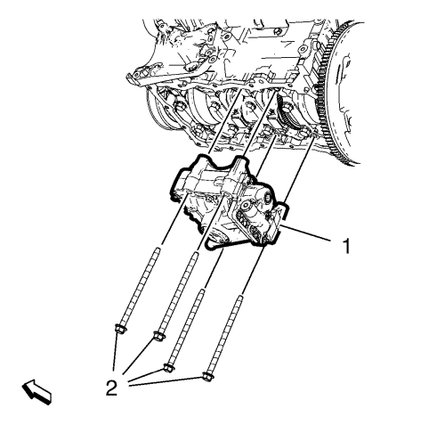
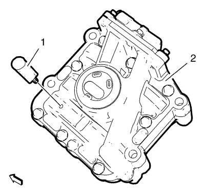
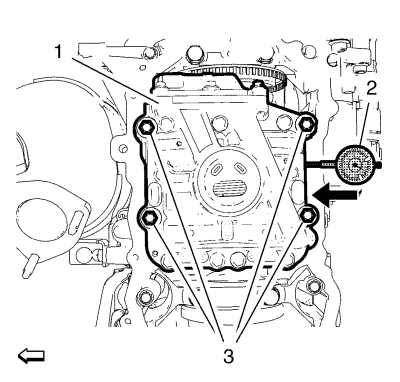
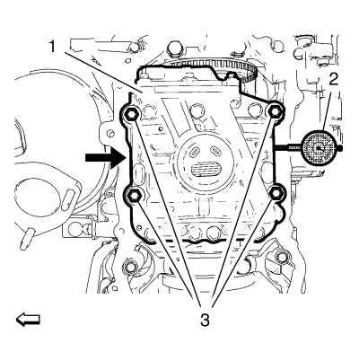

Sustitución del dámper del cigüeñal
Herramientas especiales
| • | Pasador EN-50430 - Seguro del compensador |
| • | EN-50431 Adaptador - Medición de la holgura |
Si desea informarse sobre herramientas regionales equivalentes, consultar Herramientas especiales
Procedimiento de desmontaje
- Retire el cárter de aceite superior. Consultar Sustitución del cárter de aceite superior .

- Retire los 4 tornillos de retención del compensador (2).
- Retire el compensador (1).
Procedimiento de montaje
- Coloque el pistón del cilindro 1 en el P.M.S. de encendido.

- Monte el pasador de bloqueo EN-50430 (1) y bloquee el engranaje del compensador (2).
- Monte el compensador (1) en la carcasa del cigüeñal inferior.
Nota: Monte los tornillos de retención del compensador en cruz.
- Monte los 4 tornillos de retención del compensador (2). Apriete los tornillos (2) con la mano hasta que el compensador (1) pueda deslizarse sobre la carcasa del cigüeñal inferior sin tener holgura.
- Retire el pasador de bloqueo EN-50430.

- Empuje el compensador (1) hacia el lado de escape del motor.
- Monte un comparador (2) en el lado de admisión del compensador.
- Coloque el comparador en cero.

- Coloque un destornillador (1) en el lado de escape tal y como se indica, y empuje el compensador (2) 1,1 mm (0,0433 pulg.) hacia el lado de admisión.
Precaución:Consulte Precaución con las fijaciones en la sección Prólogo.
Nota: Apriete los tornillos de retención del compensador en cruz.
- Apriete los tornillos del compensador (4) a 20 N·m (15 lib. pie).
- Compruebe las especificaciones de holgura del compensador. Consultar Limpieza e inspección del compensador del cigüeñal .
- Apriete los tornillos del compensador (4) a 50 N·m +90° (37 lib. pie + 90°).
- Monte el cárter de aceite superior . Consultar Sustitución del cárter de aceite superior .
| © Copyright Chevrolet. All rights reserved |